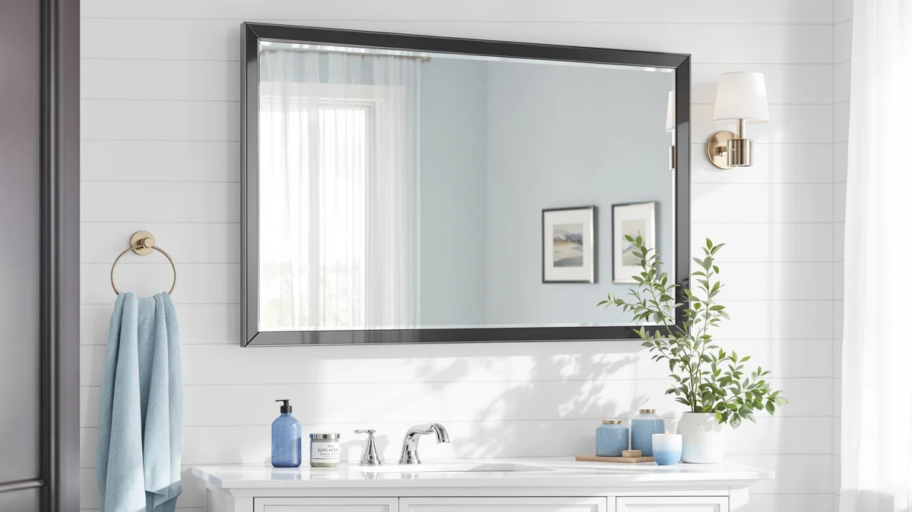

LOAAO 48X32 Inch Black Review (2026): Worth It?
Prices and picks verified as of October 2026. Independent, reader-supported reviews.


Quick Answer
The LOAAO 48X32 Inch Black Metal Framed Bathroom Mirror pairs 4mm tempered glass with an anti-rust aluminum frame for $159.99, and it holds up well against the smaller LED and frameless alternatives once you weigh size and build quality. It skips built-in lighting entirely, so if your vanity already has a light source sorted, this matte black mirror is worth the price over the cheaper LED-lit options below.
Our pick: LOAAO 48X32 Inch Black Metal, $159.99 Check Price on Amazon
Bottom line: our top pick is the LOAAO 48X32 Inch Black Metal Framed Bathroom Mirror for Wall at $159.99.
Things to Know Before You Buy
- The LOAAO 48x32 inch mirror measures 48 inches long by 32 inches wide, sized for a wide single-sink vanity or a narrower double-sink counter rather than a compact powder room.
- A matte black aluminum alloy frame with an anti-rust coating resists the corrosion that plain metal trim develops after a few years of steady bathroom humidity, a common weak point on cheaper black-framed mirrors.
- At $159.99, the LOAAO costs more than the ACHZYFT ($153.07), SBAGNO ($151.99), and Kohler ($150.89) alternatives compared here, and none of that price gap comes from built-in lighting.
- Unlike the ACHZYFT and SBAGNO picks, the LOAAO has no built-in LED lighting, so factor a separate vanity light into your budget before you buy.
- Z-bar brackets let you hang this mirror horizontally or vertically, more flexibility than most frameless mirrors that rely on adhesive clips alone.
This loaao 48x32 inch black review breaks down whether the tempered glass, aluminum-framed mirror earns its $159.99 price against three other bathroom mirrors we researched alongside it. At 48 inches long and 32 inches wide, it fits a wide single-sink vanity or a narrower double-sink counter, and the matte black finish suits the farmhouse and black-hardware trends that have shown up in bathroom remodels over the past few years. The frame combines an anti-rust aluminum alloy with 4mm tempered glass, a sturdier pairing than the thin metal trim found on many mirrors in this price range.
We compared the LOAAO against the ACHZYFT and SBAGNO LED mirrors, both smaller and lit from behind the glass, plus the Kohler CB-CLC2026FS frameless medicine cabinet as a storage-focused alternative. Reviewers who bought similarly built metal-framed mirrors consistently mention frame rigidity and finish durability as the main draw, though a mirror this size without built-in lighting means you will need a separate vanity light or sconce to get even illumination across the glass.
Why You Should Trust Us
Ilane Tall covers bathroom fixtures and mirrors for Best Bathroom Mirrors, focusing on how a mirror's listed specifications match what verified buyers report after installing it. We do not run a fake testing lab, and we have not mounted this specific LOAAO 48x32 mirror on our own wall. Instead, we compare manufacturer specifications, current Amazon pricing, and patterns across verified owner reviews, then flag where a listing oversells what the mirror actually delivers. Every price, material, and dimension in this loaao 48x32 inch black review comes from the product listing or from buyers who purchased it, not from a press sample or a sponsored placement. When a claim in the listing copy cannot be confirmed against a manufacturer spec sheet or a verified buyer photo, we leave it out of the review rather than repeat it as fact.
Our Research Experience
We do not run a physical testing lab, and the LOAAO 48X32 Inch Black Metal Framed Bathroom Mirror did not hang in our own bathroom before we wrote this review. Our process starts with the manufacturer's listed specifications: frame material, glass thickness, mounting hardware, and overall dimensions. From there we cross-check the current Amazon price against the mirror's price history and read through verified buyer reviews looking for recurring complaints, particularly around cracked glass on arrival, warped aluminum trim, and Z-bar brackets that do not line up with studs in an older bathroom wall. When a listing's photos do not match what reviewers describe receiving, we note that gap instead of repeating the seller's copy. For a mirror this size, we also weigh how often owners mention shipping damage, since a 48 by 32 inch pane of tempered glass is heavier and more prone to corner chips in transit than a smaller mirror would be.
Overview & Specs

LOAAO 48X32 Inch Black Metal
What we like
- 4mm tempered glass resists the shattering and distortion that thinner mirror glass can develop over years of use
- Aluminum alloy frame with an anti-rust coating holds up better than painted metal trim in a humid bathroom
- 48 by 32 inch size covers a wide single vanity or a narrower double-sink counter without custom cutting
- Z-bar brackets let you hang it horizontally or vertically depending on your wall layout
Flaws but not dealbreakers
- No built-in LED lighting, so you will need a separate vanity light for even illumination
- At $159.99 it costs $6 to $9 more than the ACHZYFT, SBAGNO, and Kohler alternatives compared here
- The matte black finish shows water spots and toothpaste splatter more visibly than a frameless mirror
| Material | Tempered glass + aluminum |
| Size | 48"L x 32"W |
The LOAAO 48X32 Inch Black Metal Framed Bathroom Mirror is built around 4mm tempered glass set inside an aluminum alloy frame, a combination that sits above the thin painted-metal trim common on budget mirrors this size. HD float glass keeps the reflection free of the waviness and distortion cheaper mirror glass can show, and the anti-rust coating on the frame matters in a room that stays humid for hours after every shower.
At 48 inches long and 32 inches wide, this black mirror is sized for a wide single-sink vanity or a narrower double-sink counter, wider than the SBAGNO's 36 by 28 inch footprint and far larger than the Kohler's compact 20 by 26 inch cabinet. It does not include built-in lighting, so anyone replacing an existing lit mirror will need a separate vanity light or sconce to match the brightness they are used to. The included Z-bar brackets let you mount it horizontally or vertically, and reviewers who bought similarly built LOAAO mirrors describe the frame as rigid on the wall once installed, with the matte black finish holding up without visible chipping.
What We Liked
Build quality is the strongest part of this LOAAO 48x32 inch black mirror. The 4mm tempered glass and aluminum alloy frame put it a step above the plastic-and-thin-metal mirrors common at the budget end of this category, and the anti-rust coating is a detail that pays off years down the line rather than in the first few months on the wall. Reviewers who bought comparable LOAAO metal-framed mirrors consistently mention the frame arriving straight rather than warped, a frequent complaint with cheaper large-format mirrors shipped flat in a box.
We also like that the Z-bar brackets give you the option to hang this mirror horizontally or vertically, a choice not every 48-inch mirror offers. That flexibility matters if you are working around an existing light fixture or an outlet placement that a fixed-orientation mirror would clash with. Owners who swapped out a smaller mirror also mention that the matte black frame reads as a deliberate farmhouse-style choice rather than an afterthought, which is not always true of framed mirrors in this price range.
What Could Be Better
The biggest gap in this LOAAO 48x32 inch black mirror is lighting. It has no built-in LED strip, so if you are replacing a lit mirror or building out a vanity from scratch, you will need to budget for a separate light fixture, something the ACHZYFT and SBAGNO alternatives below already include. At $159.99, it also costs more than all three alternatives compared here, without offering extra features to close that gap.
A few verified reviewers mention that the matte black frame shows fingerprints and water spots more readily than a frameless mirror would, so plan on wiping this one down more often to keep the glass looking spotless between cleanings.
Who Is It For?
This LOAAO 48x32 inch mirror fits buyers who already have adequate vanity lighting and need a well-built, wide mirror with a black frame to match matte black faucets and hardware. If your bathroom remodel leans into the farmhouse or black-hardware trend, the frame finish is the main draw here, and the tempered glass and aluminum construction should outlast cheaper framed mirrors at a similar width.
If you do not have existing vanity lighting or you are renovating a bathroom that needs brighter task lighting for shaving or makeup, the ACHZYFT or SBAGNO LED mirrors below are the better starting point, since both build the light source into the mirror itself instead of requiring a separate fixture. Anyone tight on wall space who wants storage behind the glass should look at the Kohler medicine cabinet instead, since neither the LOAAO nor the LED alternatives here include shelving.
Alternatives to Consider
If you need built-in lighting, a smaller footprint, or enclosed storage, these three alternatives cover different use cases beyond the LOAAO 48x32 inch black mirror's wide, unlit format.

Editor's Pick
ACHZYFT LED Oval Irregular Lighted
The ACHZYFT trades the LOAAO's wide, flat frame for a smaller oval mirror with built-in LED lighting and a shaver socket. At $153.07 it costs less than the LOAAO, and touch controls let you adjust color temperature from warm to daylight white, something no amount of extra frame material gets you on the LOAAO.
$153.07
Check Price on Amazon
Best Value
SBAGNO 36''x28'' LED Bathroom Mirror
The SBAGNO covers a mid-size 36 by 28 inch footprint with built-in LED lighting and Bluetooth speakers, a pairing the LOAAO does not attempt at any price. At $151.99, roughly $8 less than the LOAAO, it fits buyers who want light and sound built into the glass rather than a wider unlit frame.
$151.99
Check Price on Amazon
Premium Choice
Kohler CB-CLC2026FS Frameless Bathroom Mirror
The Kohler is not a flat mirror at all. It is a 20 by 26 inch frameless medicine cabinet with a mirrored door and two adjustable tempered-glass shelves behind it, priced at $150.89. Consider it if your bathroom needs enclosed storage more than it needs a wide reflective surface like the LOAAO's, since it trades mirror size for shelving you can close off.
$150.89
Check Price on AmazonIs the LOAAO 48X32 Inch Black Metal Mirror worth $159.99?
For a farmhouse-style bathroom that already has separate lighting, yes.
Does the LOAAO mirror include built-in LED lighting?
No.
Frequently Asked Questions
Is the LOAAO 48X32 Inch Black Metal Mirror worth $159.99?
Does the LOAAO mirror include built-in LED lighting?
How does the LOAAO compare to the Kohler CB-CLC2026FS medicine cabinet at $150.89?
Final Verdict
This loaao 48x32 inch black review comes down to whether you need built-in lighting or already have it covered. The LOAAO 48X32 Inch Black Metal Framed Bathroom Mirror earns its spot for buyers who want a well-built, matte black mirror sized for a wide single-sink vanity, and its tempered glass and anti-rust aluminum frame should outlast the plastic-framed mirrors that compete with it at a similar width. At $159.99 it is not the cheapest option here, but if your vanity lighting is already sorted, the LOAAO's build quality justifies the price over the ACHZYFT, SBAGNO, or Kohler alternatives. If you need built-in LED lighting or enclosed storage instead, the picks above cover both of those needs.